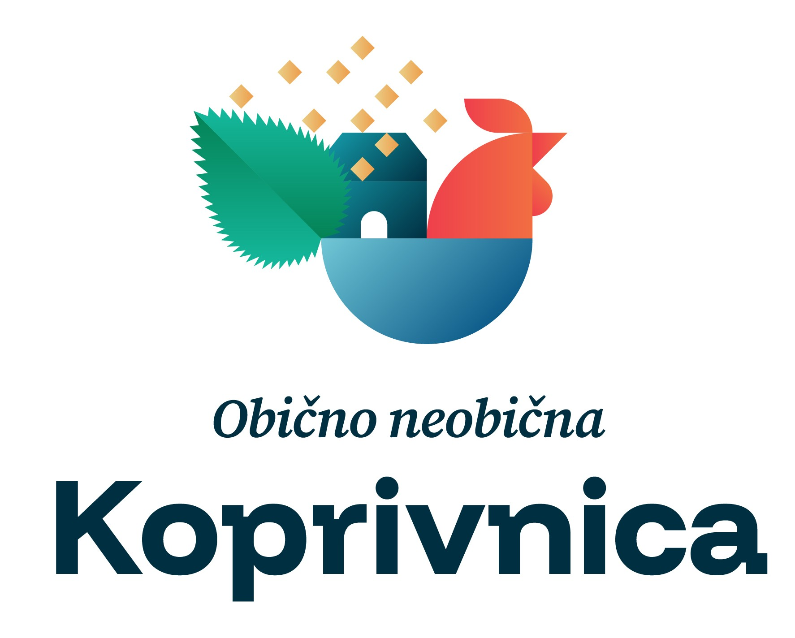

MOGUĆNOST DOGOVORA
Otvoreni smo i za odgovarajuću zamjenu u Koprivnici.

Uz klasičnu prodaju, otvoreni smo i za mogućnost zamjene naše nekretnine za odgovarajuću nekretninu u Koprivnici.
Možemo razmotriti zamjenu za jedan novi stan na odgovarajućoj lokaciji u Koprivnici.
Moguća je zamjena za dva manja novija stana u Koprivnici.
Možemo razmotriti i prazno građevinsko zemljište pogodno za gradnju.
VAŽAN UVJET
Prednost imaju nekretnine što bliže centru Koprivnice i što dalje od željezničke pruge.
Nekretnine koje se nalaze u neposrednoj blizini željezničke pruge, kao ni nekretnine oko i s druge strane željezničke pruge u odnosu na centar grada, ne možemo razmatrati.
Kod stanova tražimo noviju gradnju i urednu dokumentaciju, dok kod zemljišta tražimo praznu građevinsku parcelu pogodnu za gradnju. Otvoreni smo za ozbiljne prijedloge ako postoji obostrani interes i mogućnost dogovora.